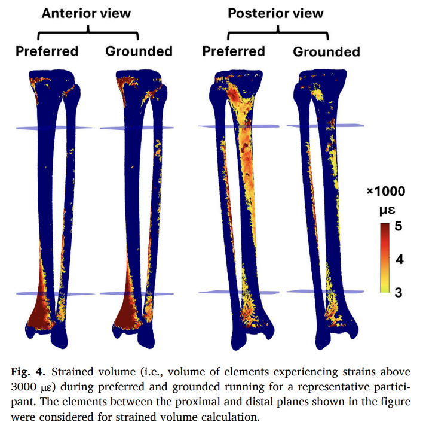
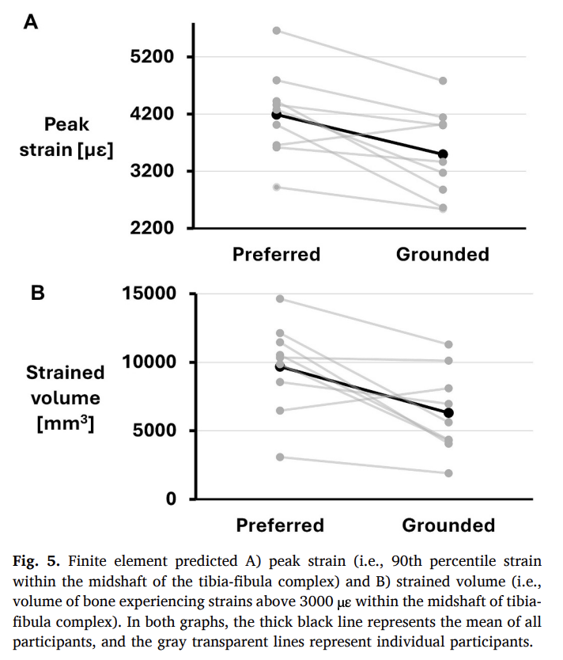

Battling through excruciating pain, Olympian Rose Harvey completed the Paris 2024 marathon with a broken leg caused by a stress fracture. Harvey remarked, "[it was] agony, and it just got worse and worse" (Raworth, 2024). She completed the race, finishing 78th place in 2:51, astonishing for an athlete with a severe injury. According to Dr. Rachel Bregman, M.D., 1:5 sports medicine clinic visits are due to stress fractures (Bergman, 2025), and the USA Triathlon Foundation finds that 1:20 middle and high school runners experience stress fractures annually (USA Triathlon, 2023). Fortunately, for us casual runners who can't finish a marathon with a broken bone, a new research study has discovered a novel running technique that minimizes stress fracture injury risk.
Stress fractures are tiny cracks (NYP, n.d.) in bones caused by repeated impact (like running). Bone strain refers to how much the bone bends under repeated force. Greater bending over time increases the risk of cracks developing into stress fractures.
The University of Calgary Human Performance Laboratory hypothesized that reducing the flight phase, the amount of time both feet are in the air, would reduce tibia/fibula stress fracture risk. Two running techniques were employed: (1) preferred running, participants run as they would normally, and (2) grounded running, participants minimize the flight phase.
Participants visited the Calgary lab three times over three weeks. First, they learned the grounded-running technique in a short five-minute familiarization session on the motion sensor-equipped treadmills. Participants were given minimal instruction, but could monitor how much upward force was exerted on a runner's foot when striking the treadmill. Participants were mandated to keep this force low, helping them eliminate the flight phase by always having one foot on the ground. The second visit, participants ran for five minutes each using both normal and grounded running in randomized order at a fixed slow pace of 12 minutes per mile, while force and motion data were collected. At the third visit, CT scans were used to build 3D bone models. Rather than developing entirely new software, researchers applied multiple different existing imaging and modeling programs to convert CT scans into highly detailed and complex 3D models, made up of hundreds of thousands of digital segments that simulate forces traveling through real bone. In order to better predict stress fracture risk, Calgary researchers invented a new measurement, strained volume, to identify the specific locations in the bone experiencing dangerously high levels of strain (measured in microstrain (µε)).

The results pictured in the above graphs supported the researcher's hypothesis. Figure 4 compares strain in preferred vs. grounded running of a representative participant using a heat map. The thinner bone on the left is the fibula, and the fatter bone on the right is the tibia. Both the anterior (front) and the posterior (back) of the tibia/fibula are shown. Cooler colors, like green/yellow, represent strained volume close to 3000 µε, while warmer colors, like orange/red, signal that the strained volume approaches 5000 µε. The Scientists chose 3000 µε as the threshold, since prior studies determined that this level of stress likely results in stress fractures (Haider et al., 2021). The highest strain volume appears on the posterior midshaft of the tibia, which also experiences the most bending/compressing, microdamage, and stress fractures. Since the grounded running displays less strain on the midshaft of the tibia, the authors concluded that grounded running may reduce the risk of stress fractures in this injury-prone area.

In Figure 5b, the total area of the tibia-fibula experiencing over 3000 µε is compared. In all but one participant, less bone area experienced significant stress during grounded running. The dark line is the average of all participants, where strained bone volume dropped by approximately 35% compared to preferred running, a statistically significant reduction (p = 0.007).
These findings suggest that slight changes in running form can lower injury risk. Notably, all participants learned the grounded-running technique within five minutes, suggesting it is practical for coaches, physical therapists, and recreational runners. By reducing the amount of time airborne, runners may lower tibia-fibula strain and stress-fracture risk. In further trials, a larger sample size, long-term testing, female participants, and faster paces could bring meaningful results about this technique's implementation in long-term high-intensity training for everyone.
While further long-term studies are needed, this technique is promising for coaches and athletes intending to avoid overuse injuries and maintain fitness. The authors' development of a new workflow to analyze bone strain is game-changing in injury prediction, rehab, and training adjustments. For runners who don't want to be in Rose Harvey's situation, spending less time in the air may help them spend more time on the road.
Works Cited
Bergman, R. (2025, April 3). Stress reaction and fractures. StatPearls. https://www.ncbi.nlm.nih.gov/books/NBK507835/
Khassetarash, A., Nigg, B. M., & Edwards, W. B. (2025). Reducing flight time during running decreases tibial-fibular strains in male runners: A finite element analysis. Journal of Biomechanics, 191, 112917. https://doi.org/10.1016/j.jbiomech.2025.112917
Raworth, S. (2024, August 13). Team GB runner Rose Harvey finished marathon despite breaking leg. BBC News. https://www.bbc.com/news/articles/c990yd94j7eo
Stress fractures: Diagnosis & treatment. NewYork-Presbyterian. (n.d.). https://www.nyp.org/orthopedics/bone-fractures/stress-fracture/treatment
Triathlon, U. (2023, October 4). 3 common risk factors for stress fractures and how to avoid them. USA Triathlon. https://www.usatriathlon.org/articles/features/3-common-risk-factors-for-stress-fractures-and-how-to-avoid-them